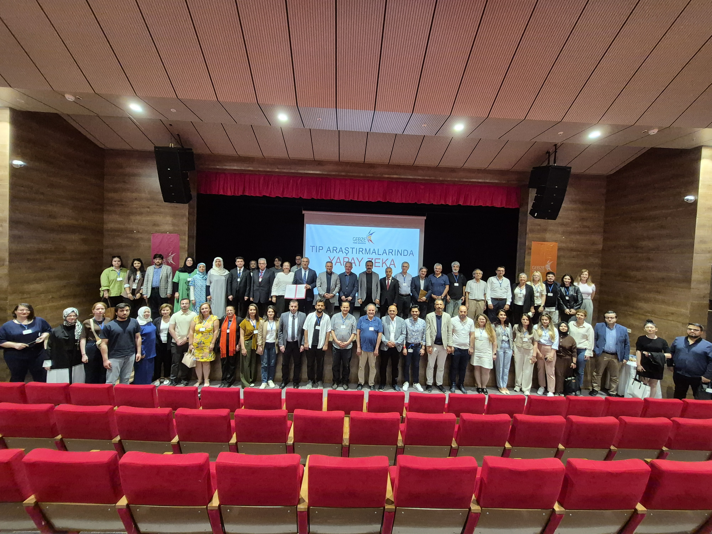
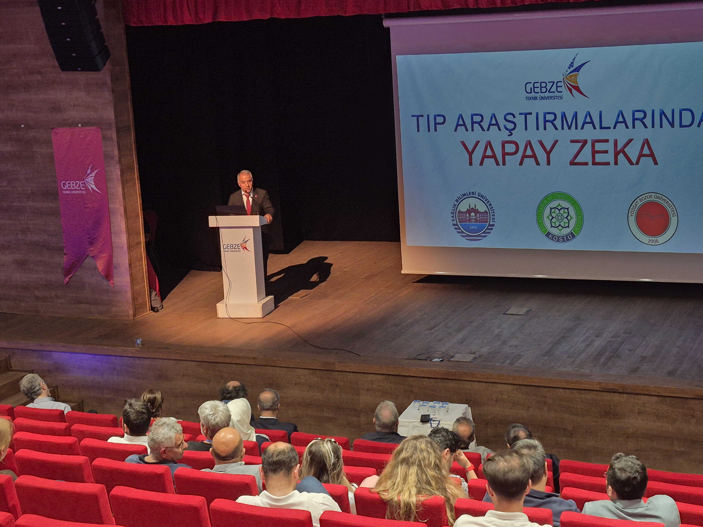
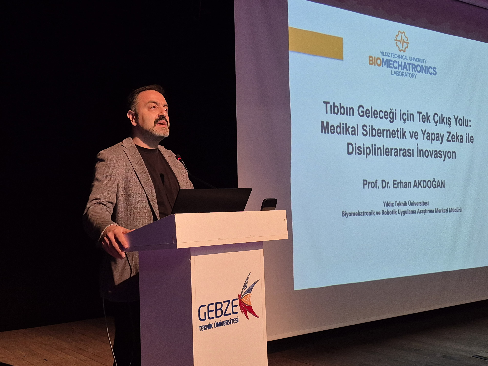
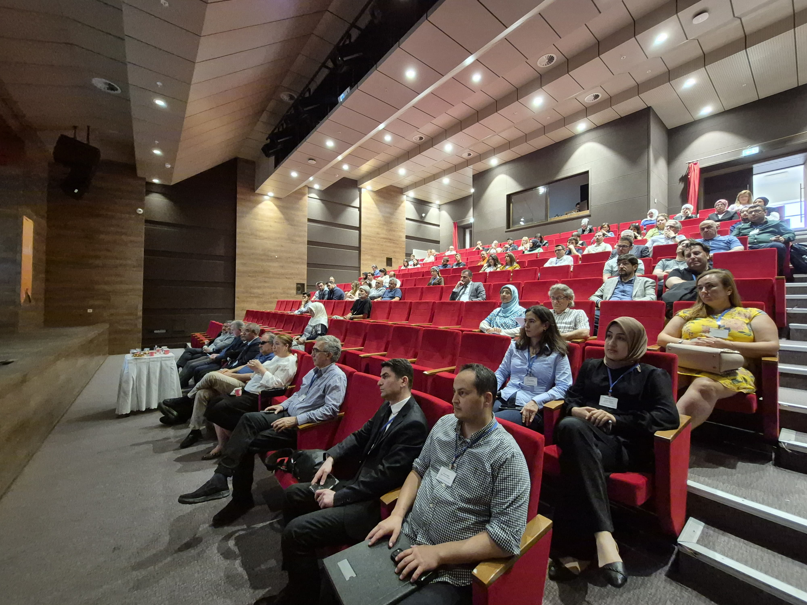
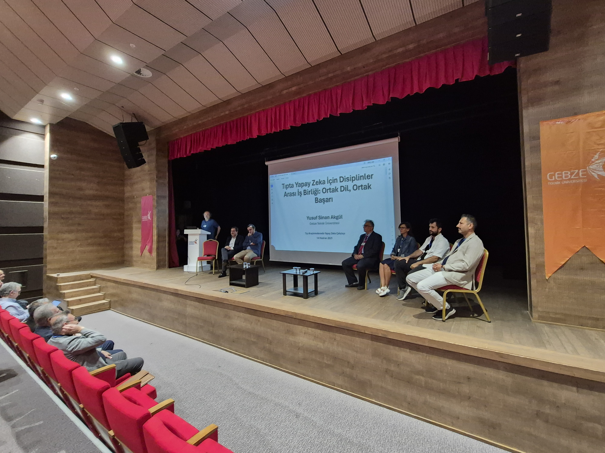
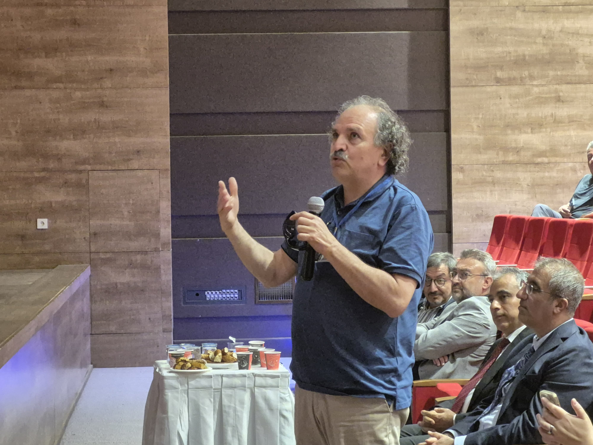

AI in Medical Research Workshop: A New Era in Interdisciplinary Collaboration
June 14, 2025 - The "AI in Medical Research Workshop" was successfully held at the GTU Congress and Culture Center, organized in collaboration between Gebze Technical University (GTU), University of Health Sciences (SBU), Kocaeli Health and Technology University (KOSTU), and Yozgat Bozok University (YOBU). Focusing on artificial intelligence applications in health sciences, the workshop created an important platform for developing interdisciplinary research ecosystems and integrating technological innovations into the medical field.
A Critical Step in the Digital Transformation of Health Sciences
The workshop lasted a full day from 09:00-15:15, with opening speeches delivered by GTU Vice Rector Prof. Dr. Elif Damla Arısan, SBU Vice Rector Prof. Dr. Yunus Karakoç, YOBU Rector Prof. Dr. Evren Yaşar, and KOSTU Rector Prof. Dr. Muzaffer Elmas, following Assoc. Prof. Dr. Mehmet Göktürk's presentation of the event's aims and objectives. The speakers emphasized the transformative power of artificial intelligence in health technologies and the strategic importance of inter-university collaboration.
It was stated that the workshop's main goal was to lay the foundations for an interdisciplinary research ecosystem that could transcend traditional disciplinary boundaries and produce technological solutions to complex problems in the health field.
Medical Cybernetics and Artificial Intelligence Vision
The main speech of the event was delivered by Prof. Dr. Erhan Akdoğan, Director of the Biomechatronics and Robotics Application and Research Center at Yıldız Technical University, titled "The Only Way Out for the Future of Medicine: Interdisciplinary Innovation with Medical Cybernetics and Artificial Intelligence." In the session moderated by Assoc. Prof. Dr. Yakup Genç, the digital transformation process in health services, the integration of artificial intelligence into health services, and successful applications worldwide were discussed.
Seeking Common Language in Interdisciplinary Collaboration
One of the most noteworthy sections of the workshop was the panel "Interdisciplinary Collaboration for AI in Medicine: Common Language, Common Success," moderated by Prof. Dr. Yusuf Sinan Akgül, Dean of GTU Faculty of Engineering. The panel featured Assoc. Prof. Dr. Fatih Tarlak (GTU), Prof. Dr. Murat Baykara (SBU), Prof. Dr. Ahmet İlker Tekkeşin (SBU), Assoc. Prof. Dr. Özer Çelik (WeAccess AI Founder, Eskişehir Osmangazi University), and Dr. Sema Candemir (Eskişehir Technical University).
The panel discussed the fundamental principles of interdisciplinary work, successful academic collaboration models, and the importance and methods of developing a common language. Issues of establishing communication bridges between engineering and medical disciplines and developing sustainable collaboration mechanisms were particularly highlighted.
Project Development and Team Building Activities
Two parallel sessions were held in the afternoon portion of the workshop. In the "Team Building and Project Proposal Development" session, participants worked in mixed groups to develop project proposals. The processes of table selection according to participants' interests, formation of multidisciplinary teams, and determination of common research methodologies were experienced.
In the "Research Areas with Collaboration Potential" session, work was done on identifying priority areas for inter-university collaboration, sharing existing research infrastructures, and introducing funding sources. Opportunities for developing joint projects were evaluated by focusing on TUBITAK and TUSEB calls.
Strategic Collaboration Protocol Signed
Within the scope of the workshop, a protocol covering collaboration in health and medical research was signed between GTU and SBU. This protocol is considered an important milestone in terms of institutionalizing inter-university collaboration and making it sustainable.
Concrete Outputs and Future Plans
In the evaluations presented at the closing session of the workshop, it was emphasized that the event was not limited to theoretical knowledge sharing but produced concrete results. Fundable project proposals were developed by participants, common research methodologies were determined, and ground was prepared for pilot applications.
The medium and long-term effects of the workshop are expected to be in the areas of joint publications and international projects, new graduate programs and research centers, sector partnerships and technology transfer, and training of young researchers.
Contribution to Turkey's Global Competitiveness
Dr. Tuncay Soylu (SBU), speaking on behalf of the Organizing Committee, stated that this workshop was a strategic step taken to increase Turkey's global competitiveness in the field of health technologies. It was emphasized that interdisciplinary collaboration is of critical importance in shaping future health services.
Participants expressed that the workshop greatly contributed to increasing their knowledge and experience in the fields of medicine and artificial intelligence and created a strong foundation for future collaboration plans.